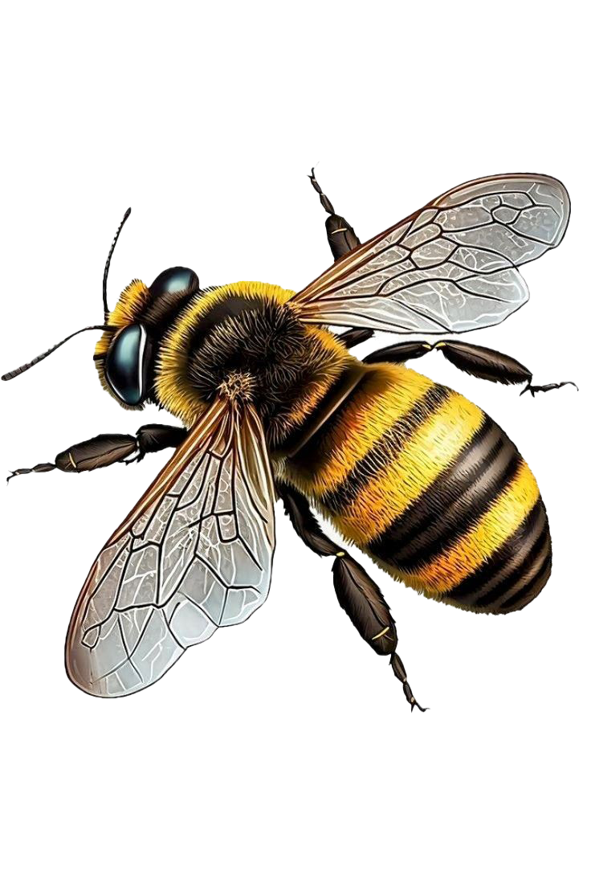

사라진 꿀벌 현황
단위 : 군봉,
군봉=약 2만 마리,괄호는 피해 비율=%
피해 규모+지난 겨울 동안 사라진 꿀벌 봉군 수,
자료, 한국양봉협회
군봉=약 2만 마리,괄호는 피해 비율=%
피해 규모+지난 겨울 동안 사라진 꿀벌 봉군 수,
자료, 한국양봉협회
꿀벌들의 역할
꽃가루 운반
화분 매개
경제적 가치
식량 자원 생산
꽃가루 운반으로 꽃의 번식 및 생태계를 가꿈
꿀벌에 의존해 번식을 하는 꽃들, 벌을 통해 번식을
하고 그로 인해 가꿔진 환경에 곤충, 동물, 사람 등
많은 개체들이 살아갈 수 있는 생태계를 조성함
하고 그로 인해 가꿔진 환경에 곤충, 동물, 사람 등
많은 개체들이 살아갈 수 있는 생태계를 조성함
주요 농중물의 70% 화분매개로 꿀벌 이용
위 그래프처럼 딸기와 아몬드는 100%, 참외 90%,
수박 88% 등 주요 농작물들의 수분을 꿀벌들이
제공해주고 있음
수박 88% 등 주요 농작물들의 수분을 꿀벌들이
제공해주고 있음
전 세계 식량 자원 재배에 기여하는 경제적
가치 최대 700조원
가치 최대 700조원
양봉 업계에 대한 가치 뿐만 아니라 주요 농작물의
수분에도 영향을 주는 만큼 농업, 요식업 모든 분야에
전반적으로 기여하기에 경제적 가치가 높게 평가됨
수분에도 영향을 주는 만큼 농업, 요식업 모든 분야에
전반적으로 기여하기에 경제적 가치가 높게 평가됨
전체 식량 자원 연간 생산량의 3분의 1 이상
꿀벌에 의존
꿀벌에 의존
전세계 전체 식량 자원 연간 생산량 중 3분의 1 이상이
꿀벌에 의존하고 있음. 위에서 말한 화분매개와 번식,
꿀 등 식량 자원의 많은 영향을 주고 있음
꿀벌에 의존하고 있음. 위에서 말한 화분매개와 번식,
꿀 등 식량 자원의 많은 영향을 주고 있음
꿀벌이 사라진다면?
생태계 사이클 파괴
버터, 과일, 견과류, 커피 X
꿀벌이 사라진다면
2~3개월 내에 양봉 농가들이 경제적으로 타격을 입음.
그리고 인공 수정으로 벌을 만들게 되고, 그럼 생산성과
품질은 낮아지지만 수요에 비해 공급이 적어 가격은 오름
빈부 격차에 따라 식량 문제가 생겨 전쟁으로 이어질 수
있고, 그로 인해 인류가 멸망하는 최악의 상황도 생각해볼 수
있음
그리고 인공 수정으로 벌을 만들게 되고, 그럼 생산성과
품질은 낮아지지만 수요에 비해 공급이 적어 가격은 오름
빈부 격차에 따라 식량 문제가 생겨 전쟁으로 이어질 수
있고, 그로 인해 인류가 멸망하는 최악의 상황도 생각해볼 수
있음